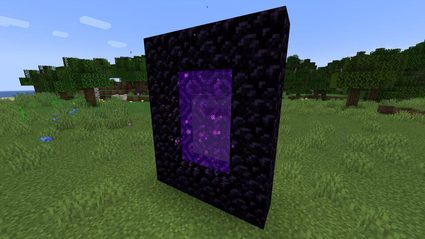
Hopefully by this point, the night has passed. You're probably getting hungry and need food. Remember the passive Mobs we had talked about in the last section. These passive Mobs like to spawn in Grassland biomes. If you're not in a Grassland, you can still find them spawn on grass. They're just not as common and harder to see. Rabbits are another edible mob which will also spawn in the desert.
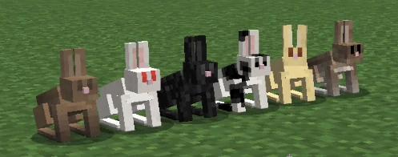
Go and find one of these mobs to practice our combat. Minecraft combat is somewhat complicated. Switch to your axe in your hotbar. You'll notice how it takes time to appear on your screen, and how there is a bar underneath of the crosshair.
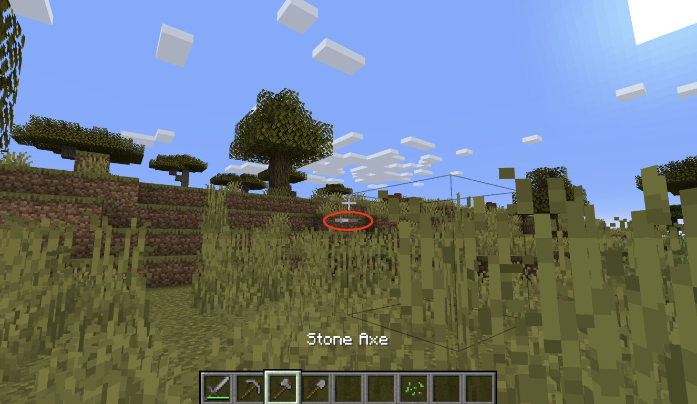
This bar needs to be full in order to maximize damage. If you spam click, you will reduce the durability of your tools greatly, on top of doing little to no damage. You can easily tell when the charge up is complete, by when the tool has stopped moving upwards on the side of the screen. The bar underneath of the crosshair works just as good as well. The two best tools for combat is the axe, and the sword. The axe has a really long cool down time before its ready to swing again. The swords is far shorter but suprisingly does less damage. This guide recommends using the sword, especially for beginners. There is another way to maximize damage and that is by doing critical hits. You can tell if you have done a critical hit easily. If tan stars come out of the Mob you're attacking, you've done a critical hit. Critical hits are achieved by jumping, and hitting the Mob on the downfall of the jump. The swing has to be done before you hit the ground. Below is an example of a critical hit.
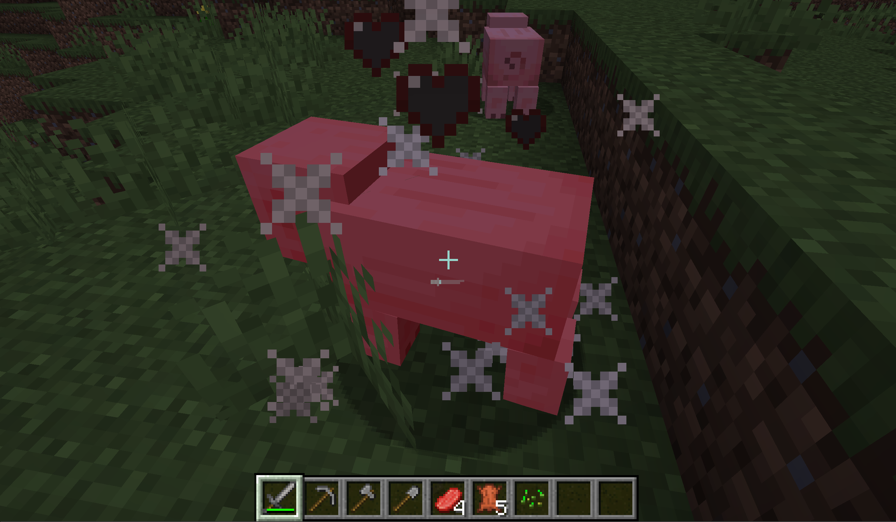
Below is a regular hit.
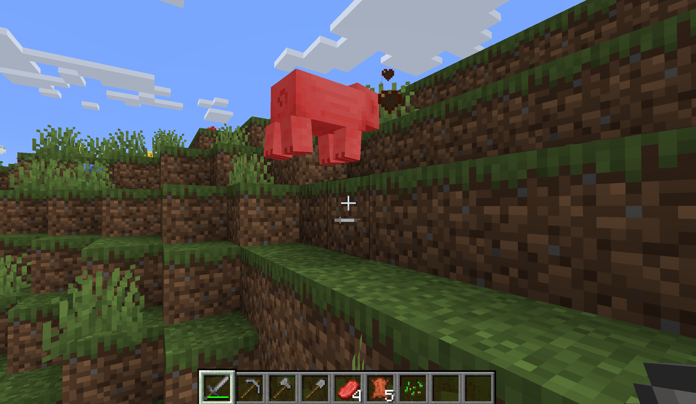
Now that you know the difference, practice by killing some passive mobs, not only get lots of food, but to also practice combat! Also try to kill enough sheep to get three wool blocks of the same color. This will come important later!
Once you're done with that, lets make a chest to store your food and other items. A chest is the same crafting recipe as a furnace, but is made out of planks instead. Here is an example in case you forgot.
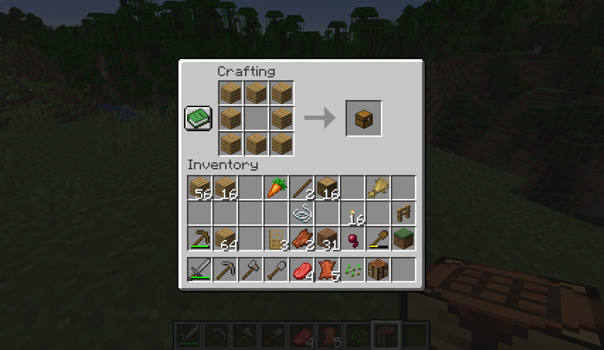
Go ahead and make two chests. Chests can be combined but it caps at two. The chests also have to be facing the same direction to combine. A single double chest holds just as much as two regular chests.
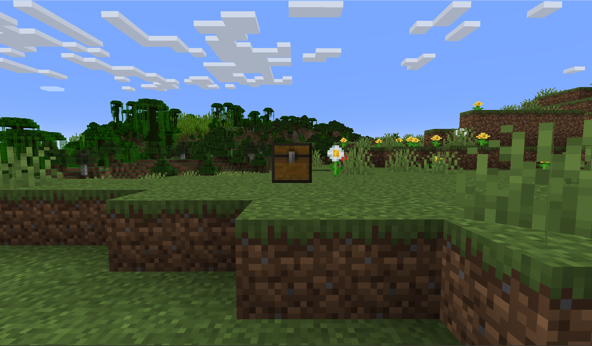
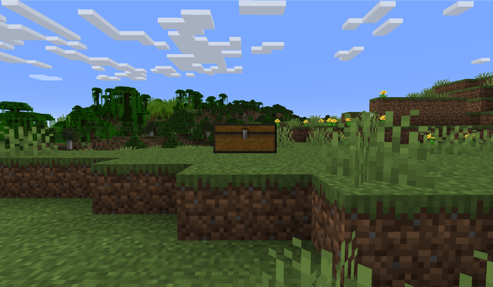
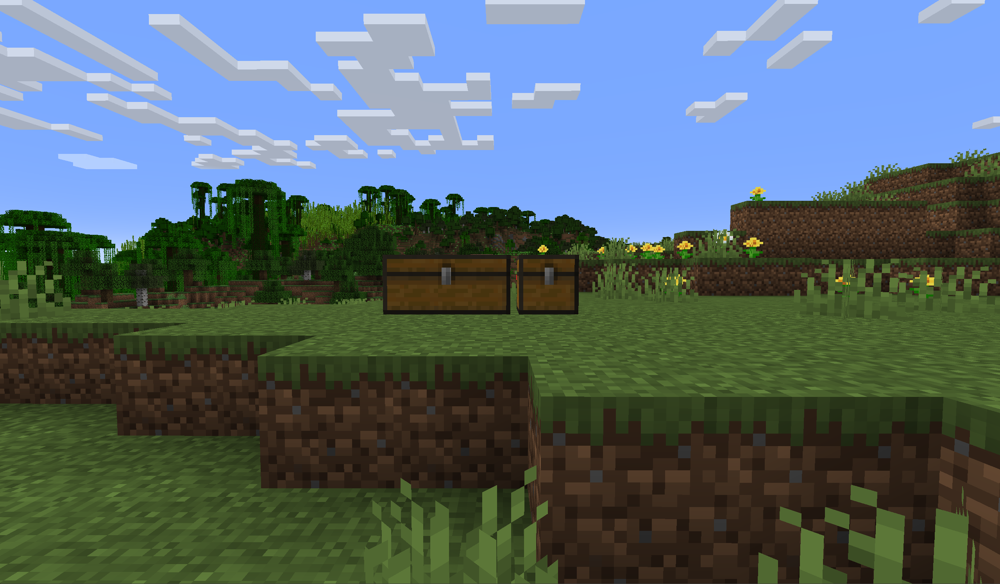
Place down your two chests next to eachother to make your double chest. Right click on the chest to open it. Keep your valuables in your chest in case you die. This is so you don't lose them. Chests are also great for storing items you don't currently need in you're inventory to free up space!
Remember the three wool of the same color you were told to grab? Well this is the part where you need the wool. So if you don't have it now, go kill some sheep to get some! Now we are going to make a bed. Beds require three wool of the same color, and three planks of the same type. Go to your crafting table. Fill the top row from left to right with your wool. Fill the middle row from left to right with your planks. Now you have your bed! Place your bed inside your home where it's nice and safe. Go ahead and right click on your bed. If it's night time, you'll fall asleep, as well as setting your spawn point! If it's daytime, you'll only set your spawn point. You're spawn point is the location that you will respawn if you die. If you don't have a spawn point saved, you will respawn at the world spawn. If you're bed gets destroyed, you will no longer have a spawn point. To fix this, you will need to place a bed down and right click on it again.
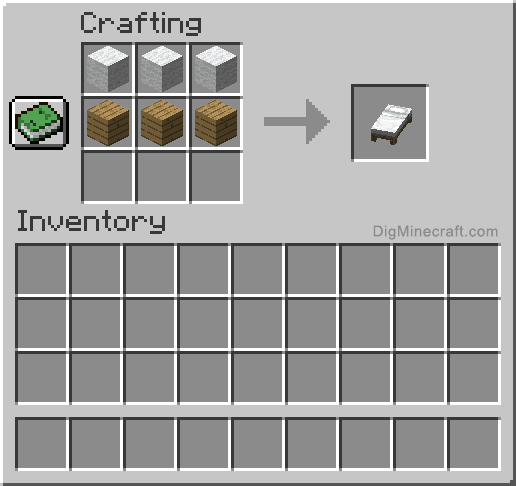
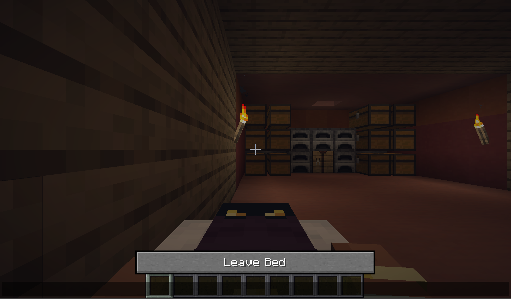
Now we will get ready to mine. Before mining, you'll want a few things. Firstly is a handful of pickaxes. For stone pickaxes, bring around four to five. You will also want two to three stacks of torches. You can also bring a stack of oak planks or sticks as well to make torches as you mine. There is naturally spawning coal ore veins in the ground. Coal ore looks like the image below.
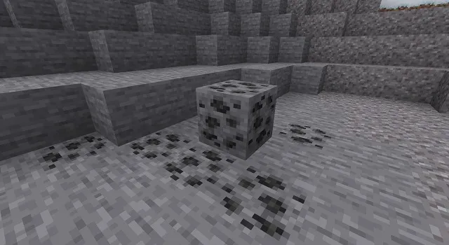
Another thing to note is your tools durability. The reason why it's recommended to bring four to five stone pickaxes, is because your tools lose durability as you use them. The durability bar is located underneath of the tool. The durability bar both goes down, and changes color in order to signify the remaining durability. As you can see in the image below, the wooden pickaxe is at about half durability.
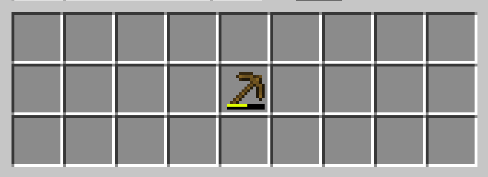
You are now ready for the mines! Right now, we are going to be mining for iron. Iron ore looks like the following.

You will want to traverse to a Y level of 15 to find the most amount of iron. In order to determine your Y level, hit f3 on your keyboard. Circled in red is your Y level. You will have to dig down to reach a Y level of 15. There is an unspoken rule of Minecraft. Never dig straight down! There are safe ways to do this, but because you will be returning to your mineshaft, go ahead and dig a staircase down to this level.
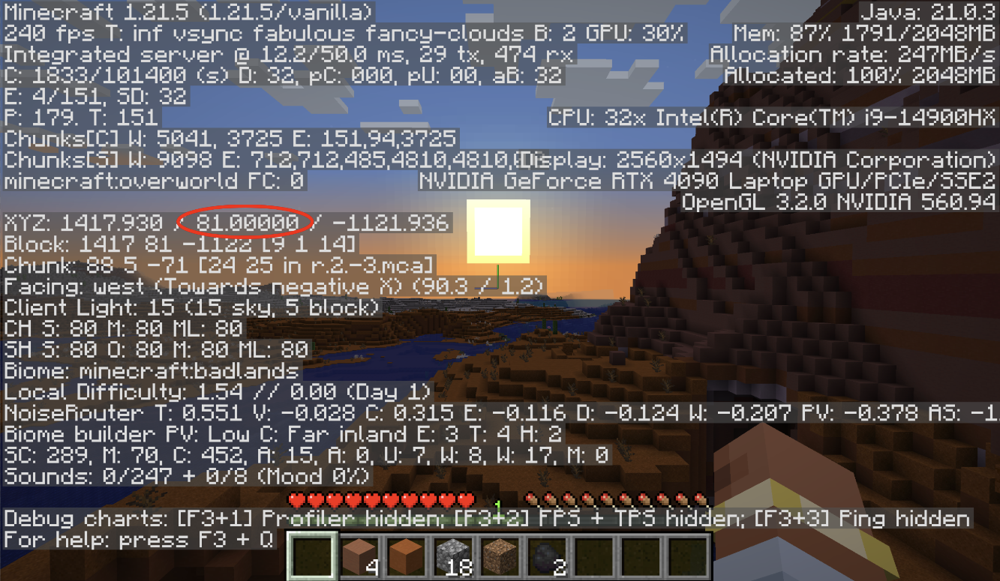
Don't bring anything too valuable with you into the mines as you may die to hostile Mobs in a cave! You can always go back and pick up your items, but they will despawn, or disappear, after 5 minutes of being near them. (This is everywhere, not just underground!) You'll want thirty-seven iron in order to be able to progress to the next step. Iron is fairly easy to find and it's recommended to get a stack but it's not necessary. The easiest way to mine is just to keep digging straight in the same direction. That way you'll also be collecting building blocks at the same time! Stay safe in the mines!
Once you return from the mines, you're going to want to upgrade your tools. First, smelt your raw iron into iron ingots. This is done by smelting them in a furnace the same way you would cook food.
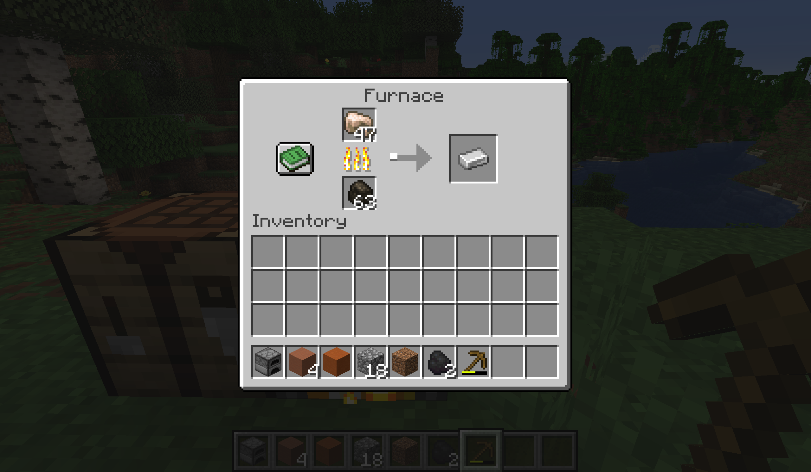
Then you're going to craft your new tools using the same recipes as previous. Just replace the stone with iron. Then we're going to create some armor and new tools to protect yourself! The first piece of armor is a helmet. Place three iron all in the top row. Then one iron in the middle left cell and one in the middle right. Secondly is a chest plate. The chest plate is the most important piece of armor as it covers the most of your body. It's also the most expensive to make. The chest plate is made by filling every single cell except for the top center cell. Next we are going to make leggings. Leggings are every single cell except for the center cell and the one below it. Finally, boots are the bottom left and right cells, and one cell above both of those. Below are images if you're confused.
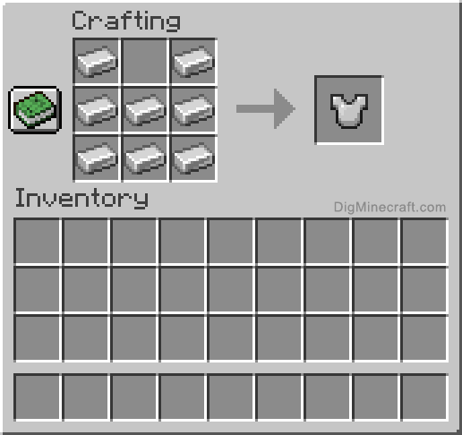
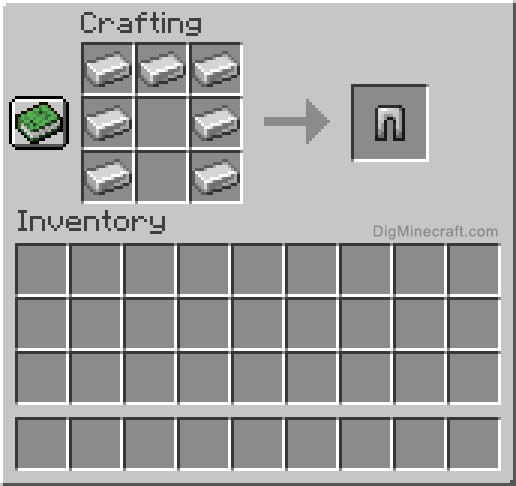
Now we are going to be crafting a shield and a water bucket! A shield is a very complicated recipe. To craft a shield place a plank in every single cell. Remove the plank from the top center, bottom right, and bottom left. In the newly opened top center, place a single iron ingot. Now you have a shield! Let's equip our armor now. Open your inventory. Drag your armor onto the cooresponding cell next to your character. You can tell where each piece of armos is supposed to go based on the background of the cell. There is an extra one for your shield too! To use your shield, crouch by holding shift.
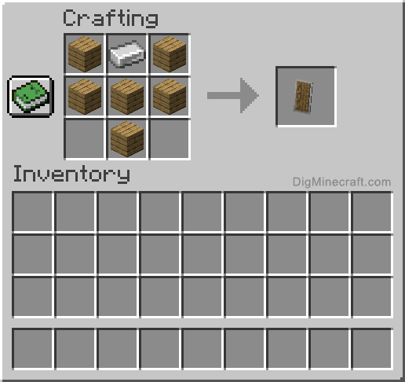
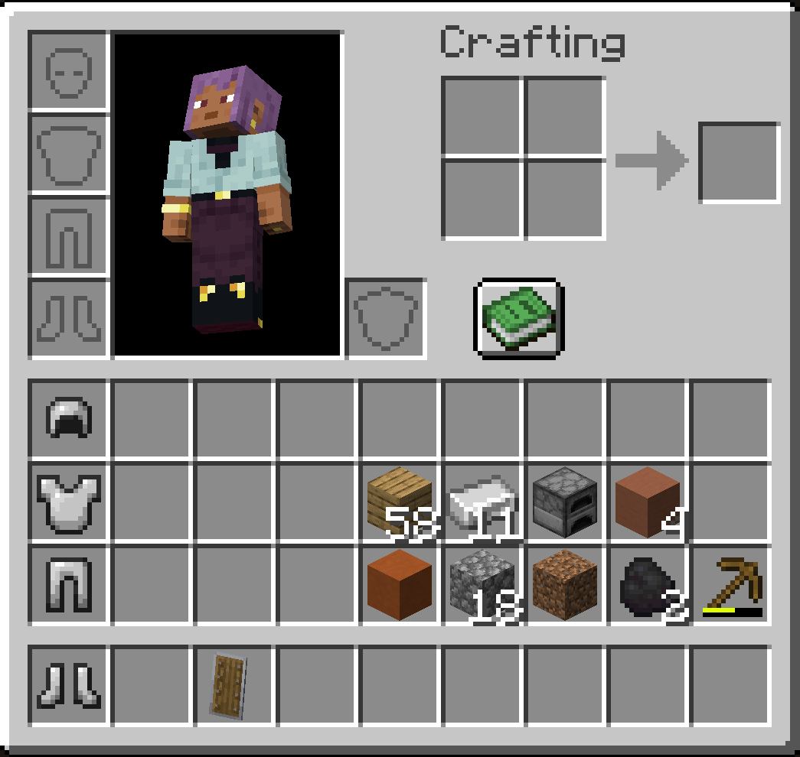
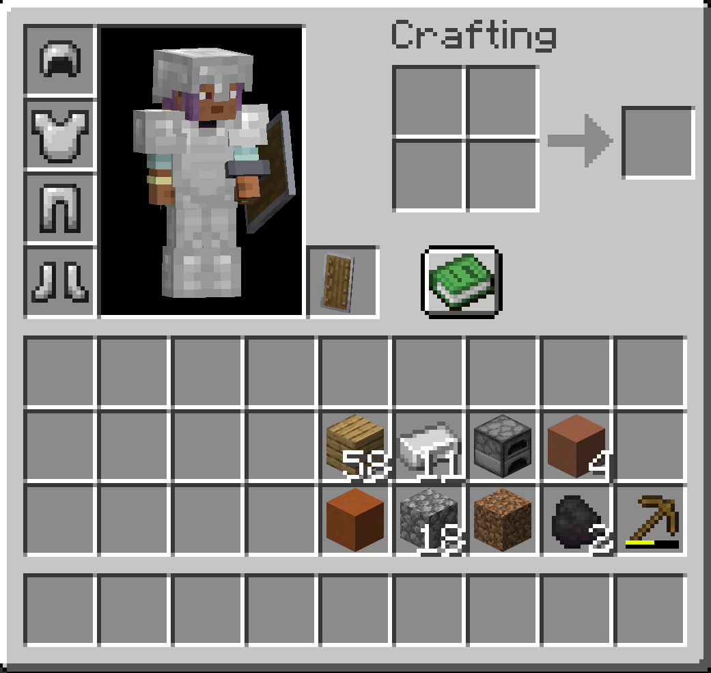
Lets craft our bucket. The bucket is simple. Just place iron ingots in the top left cell, middle cell, top right cell.
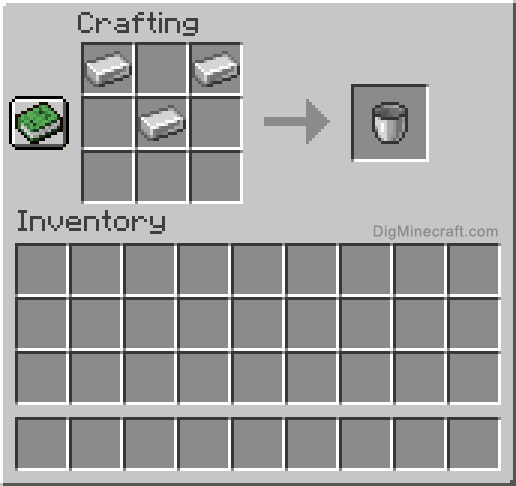
The next step is a Bow and Arrow. To collect arrows, just kill a lot of Skeletons! Theres a different way to get arrows, however, it's good to practice combat for new players. This seperate method will be discussed in a separate section. Collect a stack of arrows. A stack is sixty-four of an item. This is the maximum a cell can hold for the majority of items. While you're killing Skeletons, kill some Spiders. You'll also need three string for the bow. Once this is done, you're ready to craft your bow!
To make your bow, place a stick in the top center, left middle, and bottom center. Then from top to bottom on the right, add your string!
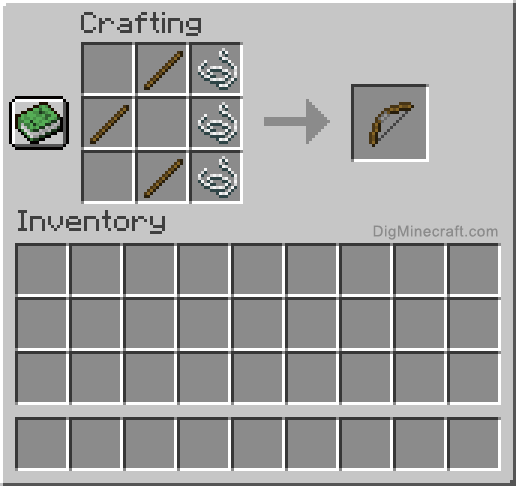
A bow can be fired as long as you have arrows in your inventory. Arrows do not need to be in your hotbar to be used. To fire a bow, hold down left click with the bow equiped. The longer you hold it, the farther the arrow will travel. If you hold until the bow is fully drawn, that is the farthest that arrows can travel. To tell if the bow is fully drawn, you'll notice that the string on the bow has stopped being pulled back. When a bow fires, it expends one arrow, and takes durability off of the bow. If your arrow doesn't hit a creature or mob, you can pick it back up. You however cannot pick up fired arrows from Skeletons.

Let's fill up our water bucket! All you have to do is go to a water source such as a lake, river, or ocean, and right click on the water. Your bucket should then turn blue at the top showing it has water in it!
You're almost ready for the Nether! Now you need to get some diamonds and some gold. This means going back into the mines! Choose a Y level between negative fifty-three and negative fiftey-eight. This is where you'll find diamonds. For the Nether, you'll need eight gold and three diamonds. Below is what diamonds (top) and gold (middle/bottom) look like!

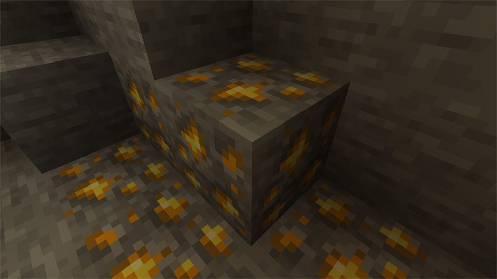
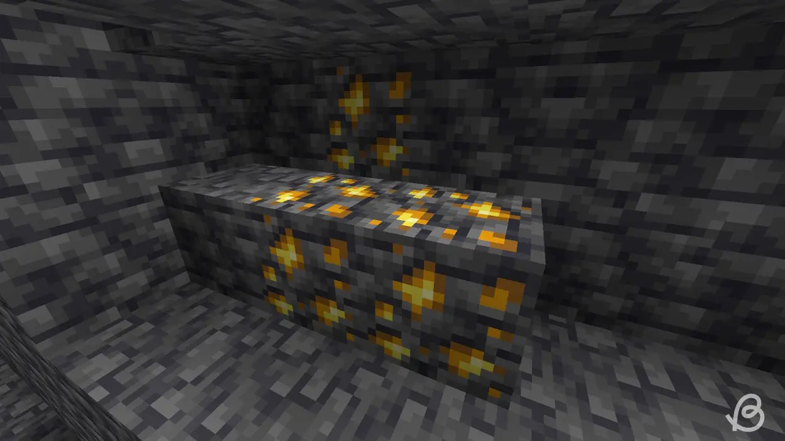
Hopefully while you've been mining for your diamonds and gold, you found a lava pool in a cave. If you did, take your water bucket down to the lava pool. Before that though, refering to previous recipes, craft a diamond pickaxe. No lesser pickaxe will work.
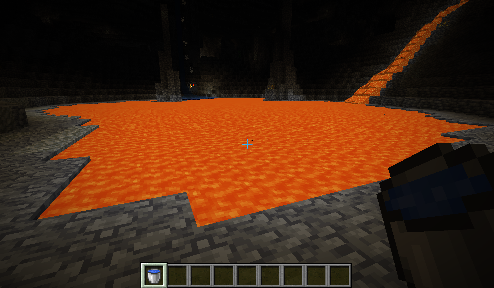
Place your water bucket by the edge of the pool and watch it flow over all of the lava! You'll need to use your diamond pickaxe to mine the obsidian. This is a long tedious task but is needed for the Nether portal! Collect 14 obsidian. When mining obsidian, don't stand directly on top of the block you're mining, in case there's more lava underneath.
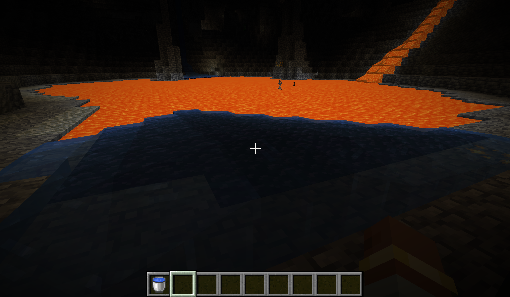
Once you have your obsidian return to the surfacea. Hopefully by this point, you have accidentally picked up some flint while mining. Flint has a 10 percent chance of dropping instead of gravel when you destroy a gravel block. If you don't have flint, you need to keep placing your gravel blocks down until you get flint! If you don't have any gravel blocks, they can be found underground at the same Y level as iron. Gravel can also be found at the surface in a select few biomes. Below is what flint and gravel look like.
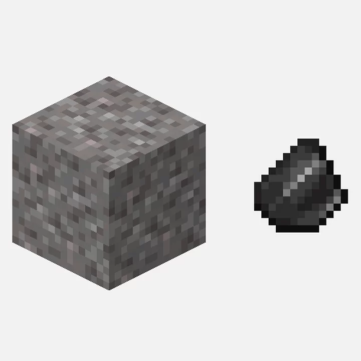
Now we will need to craft Flint and Steel. Flint and Steel is used to light blocks on fire. Be careful because fire spreads quickly on wooden blocks! To craft Flint and Steel, in a crafting table or your inventory crafting square, place an iron ingot next to flint. Refer to the picture below if you're confused.
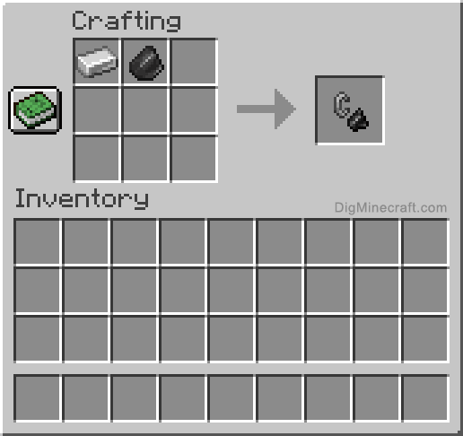
Since Flint and Steel is technically a tool, it does have durability. ALWAYS bring a Flint and Steel with you into the Nether. This is explained in the Nether section.
Lets Craft our Nether portal! First dig out 4 blocks from the ground. This will make our portal nice and flush with the ground.
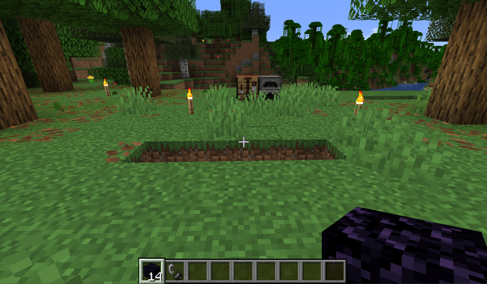
Then fill it in with obsidian.

Then on each corner, build up 4 blocks with obsidian. To do this easily, stand directly on top of the block you want to build up from. Look directly down and hold the spacebar and right click at the same time until you're four high!

Then cover the gap at the top.

Now take your Flint and Steel, and ignite one of the two exposed obsidian blocks on the bottom.

You're portal will turn purple and open. It will begin to make whooshing sounds. That's how you know it worked!

In order to travel to the Nether, stand inside the purple, glass, frame of the portal for a few seconds. Then you will enter the Nether.
Congrats! You're ready for...
The Nether!